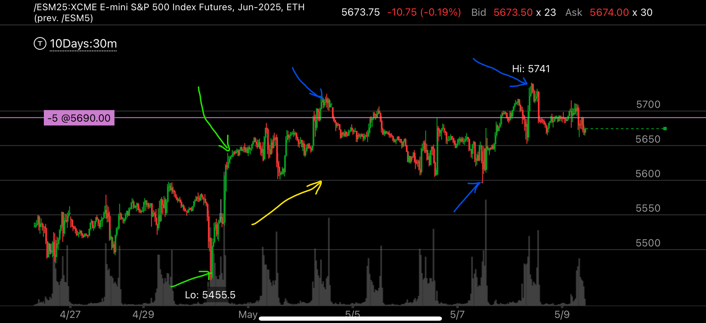

真实突破高点和虚假突破高点，低点也是一样
- 真实的突破高点，一定要突破原来的阻力点，然后不再回来，这个才是真实突破，而且一定要加速突破
- 如果突破原来的高点，又回来，那么不算突破高点，算是顶部的一部分，即使加速突破也没用

图示:
- 看黄色箭头，5600点是阻力点。前面一直在这附近，无法突破。
- 看绿色两个箭头，它从上一个高点下来，加速突破5600，创新高，
- 看三个蓝色箭头，它也是加速突破5720， 到了5741， 但是它又回来了。所以其实仍然属于顶部一部分，不是真实突破
- 结论，大盘真实突破了5600，但是在5600以上徘徊，虽然突破了5720，但是又回来了，属于顶部的一部分。